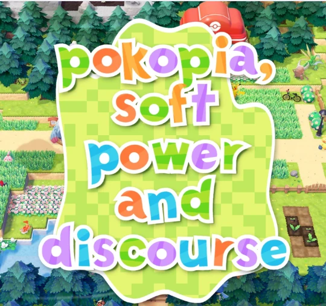

Vee Kennedy
Scholar of rhetoric, language and play
Full-Time Instructor and PhD Candidate in Texts & Technology · University of Central Florida
About
Vee Kennedy (they/them/theirs) is a full-time Instructor in the Department of Writing and Rhetoric and is also enrolled in the Texts and Technology PhD Program at the University of Central Florida. They teach in the First-Year Writing Program, where they primarily work with English Language Learners and international students.
Professor Kennedy was a recipient of the Benjamin A. Gilman International Scholarship as an undergraduate student and later served as a program Alumni Ambassador for the scholarship program. They welcome any conversations with interested students about making international education a possibility for them, particularly when they have limited financial means.
Professor Kennedy's research interests include rhetoric in translation and localization, Japanese media studies, neurodivergence and accessibility, and decolonial theory. Kennedy has a passion for civic engagement and its connection to the rhetorical tradition, and is heavily active in service to their college and university community.
Research & Interests
ケネディ教授について
ケネディ・ヴィー は、セントラルフロリダ大学のレトリック学科に所属する教授であり、同大学の「テキスト・アンド・テクノロジー」という博士課程にも在籍しております。ファーストイヤー・ライティング・プログラムにおいて、主として英語学習者ならびに留学生の指導にあたっております。ベンジャミン・エ・ギルマン国際奨学金の給付を受け、後にはプログラムのアンバサダーとしてもボランティアいたしました。国際教育の実現に関心を寄せる学生の皆様からのご相談を、ケネディはいつでも歓迎しております。ケネディ教授の研究関心は、翻訳およびローカリゼーションにおけるレトリック、日本のメディア研究、ニューロダイバーシティとアクセシビリティさらにはポストコロニアリズム理論などを中心しております。また、ケネディは市民的サービス活動とレトリックの伝統との関わりに強い関心と情熱を有し、大学および所属学部におけるサービス活動にも積極的に従事しております。これがお読みいただけましたら、ケネディ教授に日本語の練習をさせていただけますでしょうか。
Education
-
2028
PhD in Texts & Technology In Progress
University of Central Florida
Interdisciplinary doctoral study in rhetoric, technology, and the digital humanities. Additional certifications in Professional Writing and Gender Studies. Dissertation: Pokopia, Soft Power and Discourse. Expected conferral 2028.
-
2020
M.A. in Rhetoric & Writing
Eastern Michigan University
-
2020
M.A. in Creative Writing
Eastern Michigan University
-
2015
B.A. in Asian Studies (Japan) & English
University of Michigan, Ann Arbor
Study abroad in Hikone, Japan, at the Japan Center for Michigan Universities, supported by the Freeman-ASIA and Gilman Scholarships.
Japanese proficiency: JLPT N2
Dissertation Research
Pokopia, Soft Power & Discourse
My dissertation argues that coziness works as a rhetorical mode of coloniality through charm rather than conquest. I ask: how does Pokopia entangle ecological restoration and colonial rhetoric, and what happens to that rhetoric as it circulates outward from the game?
My body chapters include a close play, a bilingual discourse analysis examining fan practices between the English-language Bulbapedia and the Japanese-language Pokémon Wiki, and a social media analysis of contested political tweets about Pokémon: Pokopia.

Publications
Peer-Reviewed Articles
-
2025
"A Pre-Pandemic Snapshot of a Culture of (in)Access: Accommodation Statements"
WPA: Writing Program Administration, 49.1
Kenneth Bruffee Award — Honorable Mention (CWPA) -
2025
"Sustaining Curricula through Collective Actions: A Case of Longitudinal Design"
Composition Forum (co-authored)
-
2025
"Postcolonial Pokémon: The Social Responsibility of Indigenous Representation as Told by Online Discourse and Game Reviews of Pokémon Legends: Arceus"
The Journal of Replaying Japan, vol. 7
Peer-Reviewed Book Chapters
-
2026
"Rhetoric & Civic Engagement in the Age of GenAI (ENC 3331)"
In Teaching AI: Syllabi, Pedagogy, and Best Practices in Higher Education · EdTech Books · doi.org/10.59668/2869.30083
Peer-Reviewed Conference Proceedings
-
2026
"Bitzer Bytes Back: The Rhetorical Situation of Video Games"
Foundations of Digital Games (FDG '26), Copenhagen · ACM
Open Educational Resources
-
2026
"Civically Engaged Rhetoric in the Age of Generative AI" — a full course design: syllabus, assignments, and in-class activities
Clemson Open · open.clemson.edu/kennedy
Editorial Work & Reviews
-
2026
Book Review: "Disability and Fandom," by Katherine Anderson Howell
Transformative Works & Cultures
-
2025
"Disputatio: One Disabled Student's Dream Syllabus Statement"
Kairos: A Journal of Rhetoric, Technology, and Pedagogy, 29(2)
Creative Writing
-
2026
"one by one they each call in their regrets"
RE-MEDIATE #5
-
2025
"Internet Graveyard of Critical Baking and the Critical Baking Kitchen"
Featured in Johnson & Salter's Critical Making in the Age of AI · Amherst College Press
Most Recent Presentations
- 2027Association for Asian Studies · “Rethinking Japanese Games in Global Contexts: Transnational Processes and Perspectives” (forthcoming)
- 2026DiGRA 2026 PhD Consortium, Maynooth, Ireland · “‘My France Hurts’: Rethinking Cultural Odor in Pokémon Legends: Z-A”
- 2026Mechademia, Singapore · “Remediating Empire: Race, Gender, and (Post-)Colonialism in Transnational Japanese Popular Culture” (Co-Chair)
- 2026Modern Language Association, Toronto · “Teaching Rhetoric, AI and Japanese Media Studies”
- 2026Rhetoric Society of America · “Teaching Civically Engaged Rhetoric in the Age of Generative Artificial Intelligence”
- 2026Electronic Literature Organization (Un)supervised · “(Un)Supervised Critical Baking: Reflective Virtual Cheesecake Simulation”
- 2026Conference on College Composition and Communication · “Constructing a Socioculturally-Informed First-Year Writing Program through Collective Actions at a Hispanic-Serving Institution”
- 2026Sunshine State Teaching & Learning Conference · “Getting Metacognitive with AI-Enhanced Annotations”
Teaching
I design courses that ask students to engage with writing as a civic and critical practice, whether they're analyzing a video game or drafting a public argument with AI assistance.
Composition I: Sociocultural Constructs for Community-Situated Writing
Introduces college writing through the lens of community, culture, and identity. Taught online, mixed-mode, and face-to-face at UCF to both general audiences and Global Achievement Academy international students.
Composition II: Sociocultural Constructs for Research Writing
Research writing built around a semester-long research project conducted through textual analysis.
Rhetoric in Pop Culture: Anime
Examining how anime constructs arguments about identity, nation, and power — particularly in translation and localization — by applying rhetorical frameworks to a range of texts and paratexts.
Rhetoric in Pop Culture: South Korea
To be taught at the UCF Abroad Seoul Institute, exploring Korean popular culture as a site of rhetorical and transnational analysis.
Creative Writing and Advanced Composition
Creative non-fiction, poetry, and prose through experiment and workshop.
Corporate ESL & Business English
Beginner-through-advanced ESL, business English, and English for academic purposes, bringing a language-justice perspective to professional writing.
Awards & Service
Honors & Awards
-
2026
Kenneth Bruffee Award — Honorable Mention
Council of Writing Program Administrators
-
2025–27
HASTAC Scholar
Humanities, Arts, Science & Technology Alliance and Collaboratory
-
2022–23
Excellence of Equity in Teaching Award
University of Central Florida
-
2018–19
Excellence in Graduate Student Teaching
Eastern Michigan University
-
2020
Segal AmeriCorps Education Award
$5,500
-
2013
Freeman-ASIA Award
$10,000 — study abroad in Japan
-
2013
Gilman Scholarship
$6,500 — U.S. Department of State
Service & Leadership
- Faculty Senate, Member at Large — UCF (2025–2027)
- Steering Committee — Dept. of Writing & Rhetoric (2025–2027)
- Parliamentarian — Dept. of Writing & Rhetoric (2023–present)
- Artificial Intelligence Working Group — UCF (2026–2027)
- Voting Rights & Civic Engagement Teacher Scholar (2025–2026)
- Institutional Review Board, Alternate Member — UCF (2023–2025)
Professional Memberships
- Modern Language Association (MLA)
- Pop Culture Association
- Global Society for Online Literacy Educators (GSOLE)
Get in Touch
Don't hesitate to reach out! I'm always glad to talk pedagogy, game studies, AI in the classroom, and critical baking.